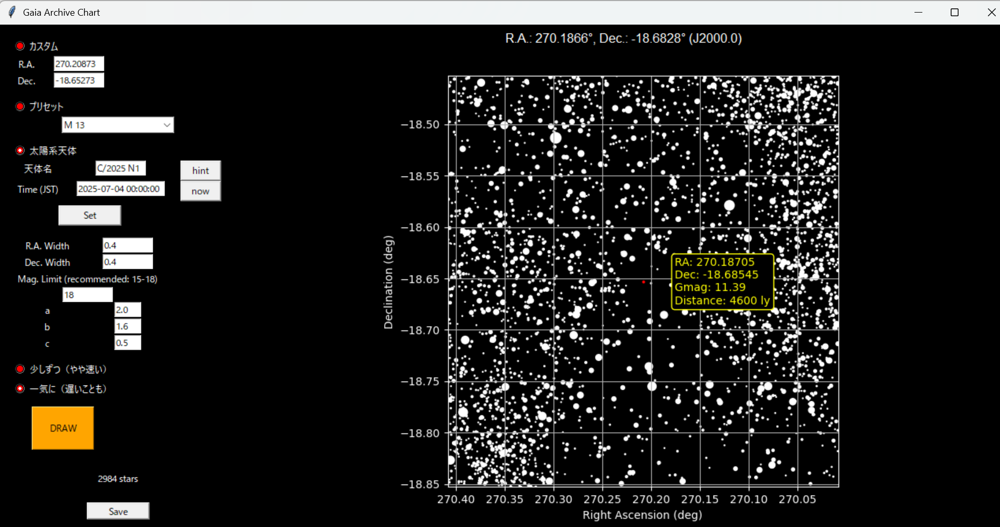

Gaia Archiveのデータを利用して、詳細な星図を作成します。 ESAやNASAのデータを取得しているため位置は非常に信頼できます。 私自身も冥王星を見つけるときなどに使っています。
since:2024/06/06 last update:2025/07/04
ファイル
下の２つのファイルをダウンロードし、同じフォルダに保存してください。 density.txtのファイル名は変えないでください。 gaia.pyの冒頭を参照し、必要に応じてライブラリをインストールしてください。 その後、gaia.pyを実行すると利用できます。
このプログラムについて
- 太陽系天体を見つける際は、星図でだいたいの位置を把握したあとに、このプログラムで正確な位置を確認するとよいです。
- 恒星はGaia ArchiveのデータをAstroqueryで取得しています。 太陽系天体の位置はJPL Horizons Systemのものを同じくAstroqueryで取得しています。 DRAWボタンを押すたびに取得するため、ネット環境が良好なところで実行してください。 取得にかかる時間はおよそ20秒から1分程度です。
- 赤経はcos(Dec)の補正だけしています。赤経0時の線をまたぐときや極を含むときの例外処理、正距方位図法での投影はしていません。
- 作成した画像はご自由にお使いください。このツールや星図を使ったり広めたりしてもらえるとうれしいです。
- バグがあった場合はLINE、Discord等、または星図の意見・提案フォームまで。